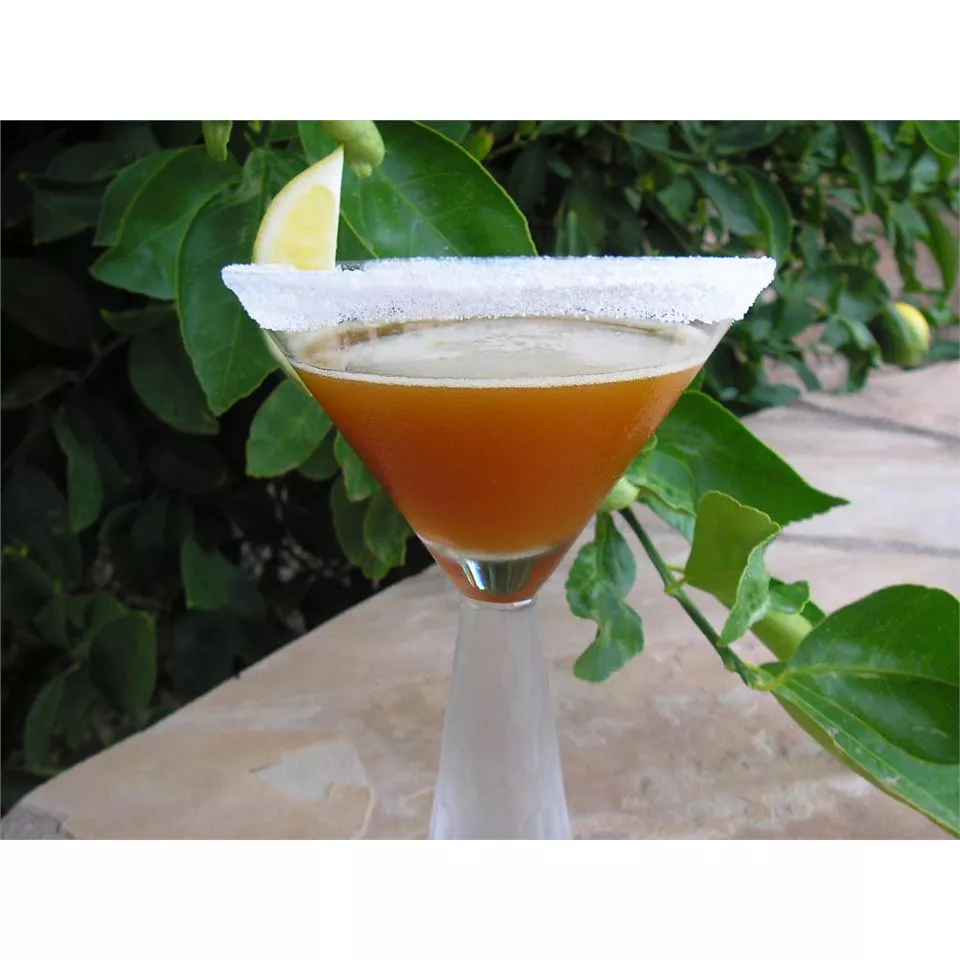

Eartl Grey Martini

This 'martini' is perfect for fans of Earl Grey tea!
Ingredients
- 1 teaspoon Earl Grey tea leaves
- 2 (1.5 fluid ounce) jiggers gin
- white sugar, for rimming
- 1 wedge lemon
- 1 (1.5 fluid ounce) jigger fresh lemon juice
- 2 fluid ounces simple syrup
Steps
- Sprinkle the tea leaves over the gin in a small glass, and set aside to steep for 2 hours.
- Pour 1/4 to 1/2 inch of white sugar onto a small, shallow plate. Moisten the rims of 2 martini
glasses with a wedge of lemon, dip the moistened glasses into the sugar; set aside.
- Strain the infused gin, lemon juice, and simple syrup into a cocktail shaker over ice. Cover, and shake until the outside of the shaker has frosted. Strain into the rimmed glasses to serve.